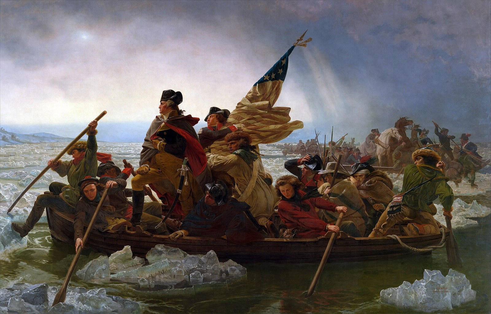

Directions: Read the full text, then answer the questions at the end.
Britain entered the war with the strongest navy in the world, a funded treasury, a professional army, and German auxiliaries hired to reinforce it. The United States answered with a Congress that could not tax, an army enlisted by the year and often unpaid, militia who served near home and then went home, and a paper currency already losing value. George Washington built his strategy on that arithmetic. The Americans could lose every city in the country and still win, so long as an American army stayed in being. Britain faced the harder task. It had to destroy that army outright or hold a continent, and it could do neither cheaply.
The strategy was nearly tested to death in 1776. That August the British landed on Long Island in force, beat the American army in the Battle of Long Island, and drove it off the field. Washington escaped across the East River by night with his army intact, then lost New York City itself. In November Fort Washington fell with its whole garrison, and the army retreated across New Jersey, shrinking as enlistments expired and men went home. By December the army that had besieged Boston numbered only a few thousand effectives, its term of service nearly run out. Paine wrote that December that the season tried men's souls.
Washington answered on Christmas night 1776. With some 2,400 men he recrossed the Delaware River through floating ice and fell at dawn on the Hessian garrison at Trenton, taking the post and its soldiers. When General Cornwallis advanced to trap him, Washington slipped around the British army by night, leaving his campfires burning, and struck the British rear guard at Princeton on January 3, 1777, winning a second small victory in nine days. Neither battle changed the map for long. Both changed what the army and the country believed was possible, and recruits, supplies, and credit flowed back to a cause that had been weeks from dissolving.

The year 1777 decided whether the survival would mean anything. Britain planned to cut New England off from the other states by seizing the Hudson River valley. General John Burgoyne marched south from Canada with an army, expecting General William Howe to meet him from New York. Howe instead sailed to capture Philadelphia, took the American capital, and changed nothing by taking it. Burgoyne's supply line stretched behind him, his army was cut up at Bennington and at Freeman's Farm, and on October 17, 1777 he surrendered his army at Saratoga, some 5,800 men by the standard count. An American army had beaten a British army in the field and taken it whole. That was the proof France had been waiting for.
On February 6, 1778, France signed the Treaty of Alliance, recognized the United States as independent, and entered the war with money, ships, and soldiers. Spain followed against Britain in 1779, and the war widened to the Caribbean, to Gibraltar, and to India, forcing Britain to defend an empire while it fought in America. That same winter the American army endured its hardest test without a battle. At Valley Forge in Pennsylvania some two thousand men died of disease, hunger, and exposure, the figure stated as an estimate. Baron von Steuben, a Prussian drillmaster, spent the winter teaching the survivors to maneuver and fight as one body. The army that marched out in June 1778 fought the British to a standstill at Monmouth.
After 1778 the British shifted their weight to the South, counting on Loyalist strength there. Savannah fell in 1778. In May 1780 Charleston surrendered with an entire American army, the worst American defeat of the war, and that August a second American army was destroyed at Camden. Then the backcountry answered. In October 1780 militia destroyed a Loyalist force at King's Mountain. In January 1781 Daniel Morgan wrecked Tarleton's legion at Cowpens. Nathanael Greene, commanding the southern army, then wore Cornwallis down through Guilford Courthouse and a long campaign of retreat, costing the British men they could not replace. Cornwallis abandoned the Carolinas and marched into Virginia. On the war's edges, George Rogers Clark campaigned in the Illinois country, John Paul Jones raided Britain's own coasts, and the frontier war of raids ran on, held for the next lesson.
Cornwallis refitted at Yorktown, and there the trap closed. Washington and the French general Rochambeau marched their armies from New York to Virginia in the summer of 1781, while the French fleet under de Grasse sealed the Chesapeake against rescue or escape. Some seventeen thousand American and French troops closed around Cornwallis's eight thousand, the figures stated as the standard counts. The bombardment opened on October 9, and on October 19, 1781 Cornwallis surrendered his army. Tradition holds that his band played a tune called The World Turned Upside Down as it marched out. The story is tradition, not record. Peace took two more years. Fighting guttered out after Yorktown, preliminary articles followed in November 1782, and on September 3, 1783 the Treaty of Paris closed the war. Britain recognized the United States as free, sovereign, and independent, set its boundary at the Mississippi River and the Great Lakes, and granted fishing rights off Newfoundland. Its terms on debts and Loyalist property would be honored unevenly by the states. The next lessons take up what governing the won country required.
1. State the odds as the reading frames them. Name three British strengths and three American weaknesses, and state Washington's strategy in one sentence.
2. Trace the army's year 1776, from Long Island to the retreat across New Jersey. Then state what the victories at Trenton and Princeton changed, and what they did not change.
3. State Britain's plan for 1777, what General Howe did instead of carrying out his part of it, and the dated result at Saratoga, with its figure stated as the reading states it.
4. State what the Treaty of Alliance of February 6, 1778 brought into the war, what the Valley Forge winter cost the army, with its figure stated as the reading states it, and what Baron von Steuben changed there.
5. In a short paragraph, answer the lesson question from the reading. Name how the war was won, giving the southern turn of 1780 and 1781, the trap at Yorktown with its figures stated as the reading states them, and the peace that closed the war, each with a date.
1. State the odds as the reading frames them, and Washington's strategy. British strengths, any three: the strongest navy in the world, a funded treasury, a professional army, and German auxiliaries hired to reinforce it. American weaknesses, any three: a Congress that could not tax, an army enlisted by the year and often unpaid, militia who served near home and then went home, and a paper currency already losing value. Washington's strategy followed from the arithmetic: the Americans could lose every city and still win by keeping an army in being, while Britain had to destroy that army or hold a continent, and could do neither cheaply.
2. Trace the army's year 1776, and state what Trenton and Princeton changed and did not change. In August 1776 the British landed on Long Island in force, beat the American army at the Battle of Long Island, and drove it off the field. Washington escaped across the East River by night with his army intact, then lost New York City. In November Fort Washington fell with its whole garrison, and the army retreated across New Jersey, shrinking as enlistments expired, until by December it numbered a few thousand effectives. On Christmas night 1776 Washington recrossed the Delaware with some 2,400 men and took the Hessian garrison at Trenton at dawn, then slipped around Cornwallis by night and won again at Princeton on January 3, 1777. The two victories did not change the map for long. They changed what the army and the country believed was possible, and recruits, supplies, and credit flowed back to a cause weeks from dissolving.
3. State Britain's plan for 1777, Howe's part in it, and the result at Saratoga. The plan was to cut New England off from the other states by seizing the Hudson River valley: Burgoyne marched south from Canada expecting Howe to meet him from New York. Howe instead sailed to capture Philadelphia, took the American capital, and changed nothing by taking it. Burgoyne's supply line stretched, his army was cut up at Bennington and Freeman's Farm, and on October 17, 1777 he surrendered his army at Saratoga, some 5,800 men by the standard count. An American army had beaten a British army in the field and taken it whole, and that was the proof France had been waiting for.
4. State what the alliance brought, what Valley Forge cost, and what Steuben changed. By the Treaty of Alliance of February 6, 1778, France recognized the United States as independent and entered the war with money, ships, and soldiers. Spain followed against Britain in 1779, and the war widened to the Caribbean, Gibraltar, and India. At Valley Forge that winter some two thousand men died of disease, hunger, and exposure, the figure stated as an estimate. Baron von Steuben, a Prussian drillmaster, taught the survivors to maneuver and fight as one body, and the army that marched out in June 1778 fought the British to a standstill at Monmouth.
5. Answer the lesson question from the reading. Accept any answer that joins the survival to the winning with dates. The United States survived because Washington kept an army in being through the disasters of 1776 and the Valley Forge winter, and it won when survival produced proof and allies: Saratoga in October 1777 brought the French alliance of February 1778, and French money, ships, and soldiers widened the war past what Britain could hold. In the South, after Charleston fell in May 1780 and a second army was destroyed at Camden that August, King's Mountain followed in October 1780, Cowpens in January 1781, and Greene's wearing campaign, until Cornwallis abandoned the Carolinas for Virginia. At Yorktown some seventeen thousand American and French troops (standard counts) closed around his eight thousand behind a French fleet, and he surrendered on October 19, 1781. The Treaty of Paris of September 3, 1783 wrote the result into law.